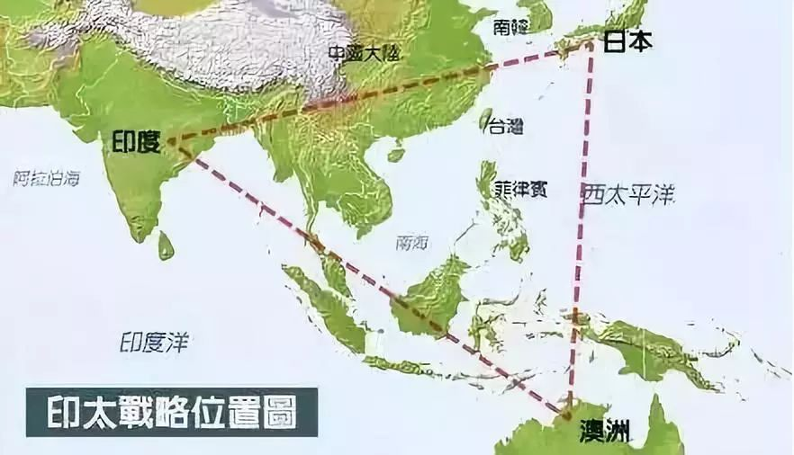

收录于合集
陈昕宇，（1998-），男，汉族，福建厦门人，国际关系学院国际政治系本科生（北京邮编：100091）。
本文系作者原创文章，由国政学人筛选后全网首发

【内容提要】
2017年，特朗普政府正式提出“印太战略”的构想，该战略具有明显的对华遏制倾向，而地缘政治因素深刻影响了该战略的决策过程。在“印太战略”决策的地缘行为体层面上，印度是“印太战略”在中国腹地的地缘支点，东南亚国家是“印太战略”在中国南海的地缘前沿；在行为体互动和地缘结构层面上，“四国机制”是“印太战略”包围中国的地缘框架，太平洋和印度洋是“印太战略”牵制中国的地缘结构；在地缘文化层面上，美国对地缘政治的认知是“印太战略”的思想基础，“文明的冲突”是“印太战略”遏制中国的价值观理念。对此，中国应坚持走和平发展道路，与周边各国一道，推动构建人类命运共同体，打破“印太战略”对中国的包围。
【关键词】
美国 对华战略决策 地缘政治“印太战略” 中美关系
一 引 言
美国对华战略决策受到多种因素的影响。特朗普就任美国总统后，其幕僚一致认为，美国的外交政策原则需要一定调整，即认为指导美国最高国家利益的原则第一是地缘政治，第二才是民主。[①]2017年11月，特朗普政府正式提出新版全球战略——“印太战略”，该“印太战略”主要有以下几个实质性内容：第一，强化美日同盟，塑造新的亚洲同盟体系；第二，发展美印关系，扩大美国在印度洋的影响力；第三，推动美日印澳“四国机制”，实现印太战略重心转移。[②]在历史上，美国对华战略决策受到多重地缘政治因素的影响，亚洲地区的国际关系行为体、独有的地缘结构和地缘思维理念等都是影响历届美国政府对华战略决策的重要因素。就特朗普政策的“印太战略”而言，国内外学界就其决策的影响因素进行了多维度的讨论。
国内学界对“印太战略”决策影响因素的认知主要集中在以下几个方面：首先，美国及印澳日三国对中国的崛起均感不适，牵制中国遂成为这四个国家的超强战略共识，“印太战略”的构想实质上是为了应对中国崛起对现有规则与秩序的冲击。[③]其次，“印太战略”是特朗普政府应对世界大变局和替代奥巴马政府“亚太再平衡”战略的需要，其实质是对美国国内利益的妥协和重构美国在欧亚地区角色的考量。[④]最后，也有学者通过解读特朗普政府《国家安全战略报告》，认为“印太战略”是美国积极塑造价值观、维护经济安全、巩固盟友关系的产物，该战略旨在维护有利于美国的“印太”均势。[⑤]国外学界对特朗普政府“印太战略”决策影响因素的认知与国内略有不同，主要集中在以下几个方面：第一，相比以前的战略，“印太战略”特别是“四国机制”更加注重区域的连贯性及其对地区和平的保障，跨洋国家的互联互通是“印太战略”的一个出发点。[⑥]第二，“印太战略”的一个关注点是遏制中国在“灰色区域”的扩张，即以“开放、自由、法治”为准则，牵制中国在南海和周边领海等“灰色地带”的军事行为。[⑦]第三，“印太战略”是一项海洋战略，其目的是为了增强相关国家的海洋态势感知（MaritimeSituational Awareness），应对中国在该地区制造的“海洋威胁”。[⑧]
通过比较中外学界对于特朗普政府“印太战略”决策影响因素的认知，笔者认为，该战略有三个特点：其一，针对性明显。“印太战略”是在美国霸权相对衰弱和中国崛起的背景下提出的，是针对中国和防范中国的一项战略，在一定程度上来说是“亚洲战略”或者“对华战略”，是美国又一次发挥“离岸平衡手”作用的实践。在地缘布局上，该战略与“一带一路”倡议有明显的重合之处，这给中美关系的发展带来一定挑战。其二，具有延续性和扩展性。“印太战略”是“亚太在平衡”战略的补充，是新时期美国对华战略的一次调整。在地缘概念上，“印太”地域是“亚太”地域的扩展与延伸，“拉印入盟”，说明该战略在地缘政治上有更深层次的考量。其三，多边机制是重要支柱。美国将借力现有的同盟体系和“四国框架”，形成对中国的新一轮包围圈，积极打造海洋同盟，力求控制远洋地区，这也说明该战略具有一定的海权竞争图谋。
但是，本文认为，国内外学界对特朗普政府“印太战略”决策影响因素的分析存在一个问题：虽然有学者就美国历届政府对华战略决策的地缘政治因素进行综合性分析，但是没有注意到“印太”这一新兴地缘概念；[⑨]虽然有学者注意到了该战略决策存在地缘政治因素，但是并没有对其进行综合性的分析。况且，中外研究视角存在一定差异，如何正确看待美国政府对华战略决策的地缘政治因素，对中国未来的外交尤为重要。
基于上述判断，笔者认为，特朗普政府对“印太战略”的决策过程存在明显针对中国的地缘政治因素考虑。在地缘行为体层面上，印度和东南亚国家是“印太战略”的地缘战略支点，美国利用这两个支点给中国制造安全压力；在行为体互动和地缘结构层面上，“四国机制”和印度洋与太平洋是“印太战略”的地缘框架，美国借助这个框架对中国形成海洋包围圈；在地缘文化层面上，美国对地缘政治的特有认知和“文明的冲突”是“印太战略”的地缘思维理念要素，美国运用意识形态来打造遏制中国的价值观同盟。下文将从这三个地缘政治维度考察“印太战略”的决策影响因素，并在最后提出中国的应对方案。
二 “印太战略”决策的地缘行为体因素
地缘行为体是影响一国对外决策的重要因素，与其他地缘要素不同的是，地缘行为体是能动的、可变的，能在一国的对外决策中发挥灵活的作用。斯皮克曼认为，印度和东南亚国家同属“边缘地带”，因其对内陆出海通道的占用而成为控制世界的关键。[⑩]具体而言，2017年以来，特朗普本人及其政府要员在关于“印太战略”的讲话中多次强调印度和东南亚国家在该战略中的重要地位，助理副国务卿阿历克斯·王甚至直言：“从‘亚太’到‘印太’，印度在太平洋、东亚和南洋扮演着重要角色，它是一个能够稳定印太地区自由和开放秩序的国家。”[11]而东南亚国家是美国的“友好伙伴”和“坚定支持者”，一直以来在美国的东亚战略中具有关键地位。本文认为，印度和东南亚国家是影响“印太战略”决策的地缘行为体因素，美国通过这两个地缘支点和战略前沿，威胁中国腹地的安全环境，破坏南海的和平稳定。
（一）印度是“印太战略”在中国腹地的地缘支点
印度是南亚次大陆上最大的国家，也是“印太战略”在印度洋的地缘支点。在麦金德的世界观中，印度和中国同属季风性沿海地区，是世界六大“自然地域”之一。[12]但是，索尔·科恩却认为，南亚是一个与其周围地缘战略辖区以及地区性亚区分开的独立地缘政治区，印度和中国无法共享地缘政治命运，因为它们都有独特的地理和文化历史，这给美国“印太战略”的实施和美印深化合作提供了有力的地缘政治背景，美国可以利用中印之间的矛盾离间两国关系。[13]印度的主要城市——加尔各答和孟买等都分布在孟加拉湾和阿拉伯海沿岸，这些城市是通往南亚其他国家的要道，也是通往印度洋、太平洋的重要航运枢纽。印度作为南亚的区域性大国，在地理上既有一定的战略纵深，又有数量可观的出海口，是欧亚大陆直接通向印度洋的的门户。美国选择印度作为其战略的地缘支点，在南向可以控制欧亚各国通向印度洋的通道，东向可以有效遏制中国在南亚的影响力，在西向又可以牵制伊朗、阿富汗等让美国“头疼的国家”。
除了印度本身所具有的地缘政治特点外，近年来印度与美国的政策对接也给“印太战略”的开展奠定了坚实的基础。[14]美印双方在“四国机制”和美印日三国部长级对话框架内，寻求关于海洋态势感知和反恐等多个领域的合作。[15]而印度自莫迪上台后，将原来的“东向战略”升级为“东进战略”，以凸显印度的地缘政治新角色，即从亚洲政治的边缘走向中心，与中国争夺东亚地区事务的话语权和主导权，实现自己的“大国梦”——“把印度洋变为印度之洋”，从而在地区秩序构建中发挥关键作用。[16]美印两国的战略不谋而合，其主要的战略契合点是美印两国联手，共同遏制中国的崛起。美国与中国之间隔着巨大的水体——太平洋，这使得美国的对华直接遏制显得“心有余而力不足”，这时美国就需要一个在地缘上接近中国的国家——印度。特朗普政府的“印太战略”正是基于这样一种考量，即作为自身离岸平衡手，在遭遇到一个潜在的霸主（中国）时，倾向于将责任推给其他的大国而不是亲自对抗这些威胁，这就是米尔兹海默提出的“推卸责任”战略。[17]而印度作为地区另一个潜在的霸主，在面对中国崛起的巨大压力时，更需要美国在东向支援自己，以缓解因领土纠纷和西藏问题与中国产生的矛盾，为自身的大国梦创造较为稳定的环境。特朗普政府的“印太战略”将印度变为在中国腹地的地缘支点，“撬动”与“平衡”整个东印度洋地区的局势，这是基于如上所述的地缘政治考虑。
（二）东南亚国家是“印太战略”在中国南海的地缘前沿
东南亚作为最直接毗邻中国南部的地区，是“印太战略”在南海的地缘前沿。索尔·科恩在《分裂世界的地理和政治》中认为，东南亚处于“破碎地带”的最南端，“它们的政治经济命运对依赖贸易的海洋地区具有生死攸关的意义”，同时“由于它们的陆地通道伸向欧亚大陆的重要地区, 他们的命运也同样关系到这一地区。”[18]具体就东南亚地区而言，这里各种民族与宗教相互融合，域外大国利用东南亚国家的各类矛盾，在历史上都试图控制这一地区，特朗普政府控制东南亚国家以制衡中国，也有这方面的地缘考虑。东南亚地区的战略意义在于，这里是海权国家与陆权国家争夺对亚欧大陆控制权的前沿阵地。其一，对中国而言，东南亚地区是本土外围的战略屏障，如果能与东南亚国家建立良好的互动关系，对“21世纪海上丝绸之路”的顺利推进和进口能源的安全保障来说都有相当大的意义。从另一个方面看，对美国而言，欧亚大陆跨越半个地球，位于“心脏地带”的国家深居内陆、远离海洋，常规军事力量只有通过“破碎地带”才能涉足其中。“印太战略”对东南亚国家的投注并不少于印度，美国试图通过控制“破碎地带”来控制“心脏地带”的出海通道, 进而控制中国的能源通道。
但是，“印太战略”对东南亚国家投注的目的不仅仅在于控制能源通道，其深层次目标是以该地区为战略的前沿，间接介入南海问题，以南海为地缘纽带，牵制中国的“一带一路”建设。南海蕴藏有丰富的资源，又是东亚各国航运的必经之路，关键的地缘战略位置是中国和声索国之间存在矛盾的主要原因。“印太战略”正是利用这种地缘矛盾在中国和东南亚国家之间打下“楔子”，企图挑拨离间它们之间的关系。虽然近年来南海问题略有降温，但是美国“高调介入”的姿态依旧没有改变。[19]2017年5月，在召开美国- 东盟对话会的新闻发布会时，多数记者的提问涉及南海问题，助理国务卿帕特里克·墨菲则表示：“我们要确保南海航行和飞越自由，东盟伙伴可以要求美国维护这两项权利，并阻止南海岛礁的军事化建设。”[20]深化与东南亚国家的安全关系，增加在南海的军事存在，成为特朗普政府“印太战略”格局的重要组成部分。[21]东南亚国家呈漏斗形分布在南海的两侧，南沙群岛远离中国大陆，中国对其控制力随着地理空间距离的扩大而变得困难。“印太战略”将东南亚国家作为地缘前沿，就好比扼住了“21世纪海上丝绸之路”的咽喉。而东南亚国家作为地缘前沿，则认为美国的霸权能够很好地保护南海的自由畅通，它们担心自身安全会受制于中美战略冲突与竞争的影响，将主动结成紧密联盟以求自保，这给南海地缘局势增添了更多的复杂因素。[22]
三、“印太战略”决策的行为体互动和地缘结构因素
行为体之间的地缘互动和地理空间本身具有的结构是影响国家对外决策的两个要素，行为体之间的互动能改变现存的地理空间结构，给原本不可变的地理要素注入能动力量。具体而言，特朗普政府“印太战略”的两大地缘支柱是“四国机制”和“两洋”。特朗普执政前期在历届美国政府原有的“2+2”对话机制和“美日澳”“日印澳”“美日印”三边对话机制基础上，将其整合为美日印澳“四国机制”，更加强调印度在东印度洋和澳大利亚在南太平洋的作用；同时，特朗普将奥巴马政府“亚太再平衡”战略扩展为“印太战略”，将印度、东南亚国家甚至非洲国家都囊括在内，支持澳大利亚充当“两洋”的轴心和枢纽。[23]本文认为，“四国机制”是影响“印太战略”决策的地缘互动因素，印度洋与太平洋是影响“印太战略”决策的地缘结构因素，美国通过建立横跨两洋的“四国机制”框架，形成对中国的新月形包围圈，牵制中国的海洋战略。
（一）“四国机制”是“印太战略”包围中国的地缘框架
“四国机制”是“印太战略”的多边体系支柱，也是四国构想的包围中国的地缘框架，这四个国家分立在“两洋”的周边，对“印太战略”的稳定性起决定性作用。“四国机制”在“印太战略”之前早有雏形，前文已经论述了印度的作用，而日本和澳大利亚也是“四国机制”的节点。日本处于麦金德“心脏地带”理论中所描绘的“外新月地带”东侧，它扼守着东北亚陆权国家通向太平洋的重要通道，被视为地域陆权东扩的“桥头堡”。[24]历届美国政府正式看到了这一点，从而一直将日本塑造成为远东的前沿阵地，用以对抗苏联和中国。而日本自身对地缘的定位也赋予美国“保护”日本的权利，日本领土狭小、资源匮乏、周边压力巨大，因此安倍政府力推海洋国家战略，拓宽能源渠道，防范与遏制中国、俄罗斯等“大陆国家”，这与“印太战略”的对日需求不谋而合。[25]澳大利亚位于亚洲的远边，是控制“两洋”的核心，除此之外，澳大利亚拥有丰富的矿藏资源，是中国重要的铁矿石进口基地。澳大利亚积极配合美国在印太地区的行动，维持中等强国地位，作“西方文明前哨”。[26]“印太战略”利用了澳大利亚的特殊地理位置和积极图强的心理，把它塑造成“四国机制”打在中国远洋“铆钉”。
需要注意的是，“四国机制”的形成不是美国的一厢情愿，而是四国之间战略互动的结果。[27]在2017年11月四国高级官员首次会晤的联合声明上，四国一致认为，将“维护印太地区的规则秩序，包括航行自由和飞越，尊重国际法，和平解决争端，增强联系。”[28]由此可见，在“四国机制”发展已经比较完善的前提下，特朗普政府提出“印太战略”的时机是较为成熟的。从内容上看，“四国机制”对中国的遏制倾向是很明显的。在原来的“亚太再平衡”战略中，日本发挥了牵制中国东海和稳定东北亚局势的作用，但澳大利亚和印度的角色定位显然没有达到美国的预期，澳中经贸关系平稳发展，印度用领土争端和西藏问题遏制中国的力度远不能达到美国地缘战略的需要。特朗普政府提出“印太战略”的“四国机制”，把印度和澳大利亚拉进自己的“朋友圈”，目的是寄希望于印度在南亚地区更强有力地制衡中国，阻碍“一带一路”在西向和南向的通道，同时防止发展中国家群体性崛起；而中澳关系自2017年以来明显受到系统性、负面言论的损害，澳前大使甚至表示“中澳关系处于30年来的最坏时期”。[29]中国驻澳大使成竞业也承认：“如果双方越来越缺乏互信，从长远来看，它会产生不良影响。”[30]我们可以看到，美国把澳大利亚塑造为“四国机制”的南部轴心，这样就控制了印度洋和太平洋的关键枢纽，在南太平洋给中国打下了“铆钉”，能够有效牵制中国的远洋战略和阻碍矿石进口渠道。同时，“四国机制”中已有的“亚洲安全菱形”把中国的东部和南部沿海地区覆盖在内，这势必增加中国周边态势的不稳定性，有利于美国多方介入东海和南海问题，对中国形成新型的地缘战略包围。[31]
（二）印度洋与太平洋是“印太战略”牵制中国的地缘结构
印度洋与太平洋是“印太战略”实施的区域范围，“两洋”是牵制中国的海洋地缘结构。亚太地区最大的地缘政治特征就是海洋性，这一地区的国家具有相对于陆上货物移动的海上运输优势，因而具备参与国家贸易的有利条件。[32]但是，亚太地区大部分国家依赖美国海上和空中力量维持航道的安全，而美国也乐意维护海上的自由与开放。在这一点上，“印太战略”与“亚太再平衡”是一脉相承的，即以控制太平洋为有力抓手，借机拉拢亚太国家，利用已有的“轮辐式”同盟体系，牵制中国和俄罗斯的海权图谋。[33]2018年版的《美国国防战略总结》中提出，中国正在利用军事现代化和掠夺性的经济来要挟邻国，它将继续奉行军事现代化计划，替代美国寻求在印太地区的霸权。[34]印度洋作为新兴的地缘结构，对特朗普政府来说具有特殊地缘意义。首先，印度洋的地缘结构更有利于发挥印度和澳大利亚在“亚太再平衡”战略中的作用，增大中国在西向和南向的安全压力。其次，中国提出的“21世纪海上丝绸之路”会途径印度洋，美国需要增强在印度洋的存在以围堵“21世纪海上丝绸之路”。再次，印度洋北接中东地区，美国的战略重心转移后需要一个介入中东事务的地理跳板。最后，印度洋西北岸是西亚波斯湾地区，这里是全球的能源产地，美国控制了印度洋等于控制了全球大多数的能源通道。“印太战略”把印度洋纳入战略考量范围，正是基于以上原因。
美国试图以印日为东西“两翼”、以东盟国家和澳大利亚为南部岛链，形成对中国远海的新一轮战略包围。美国认识到在东亚濒海的狭窄海域，美国并不享有绝对优势，中国的非对称性优势是一个无法忽略的事实。因此，在中国的远距离打击能力面前，美国在东亚的濒海前沿存在的锋线正在出现向大洋后撤的倾向，美国的选择是利用强大的海权优势施加压力。[35]“印太战略”策动“两洋”的地缘框架，在外围给中国的远洋打造新月型包围圈，就是基于中国在近海具有绝对优势的考量。另外，美日还企图利用“四国机制”和已有的多边合作框架，打造印度洋与太平洋的“一纵一横”，纵向加强在西太平洋地区的军事存在，横向深化与东非和东南亚国家的合作，而这“一纵一横”的交点就落在中国身上。为此，美国国防部专门开辟“印太专栏”，[36]并计划在2020年前将60%的军力布置在印太地区。[37]美国还积极支持日本与非洲国家的合作，企图在“21世纪海上丝绸之路”的末端国家与中国争抢市场。加上“两洋”的地缘框架，美国通过“印太战略”极限压缩中国的近海和远洋战略生存空间。
四、“印太战略”决策的地缘文化因素
地缘文化能够影响一个国家的对外战略和政策，而地缘文化的差异是国际关系中的重要变数，正如亨廷顿所言：“冲突的差异来自文化差异，冲突的结果反映了权力关系的变化。”[38]具体而言，美国的地缘政治思想有着深厚的历史背景，美国历届政府的对华和对亚战略决策无不包含意识形态因素，其对地缘政治的认知是“印太战略”的思想基础。另外，亨廷顿提出，文明之间包含着冲突，全球政治的主要冲突将发生在不同文化的族群之间，因此中美作为主要国家会存在核心冲突。[39]在这一点上，特朗普政府的“印太战略”既利用了中美之间核心冲突的理论，又利用了中国与周边国家断层线冲突的理论，团结与中国具有文化差异的国家，共同制造孤立中国的价值观同盟。
（一）美国对地缘政治的认知是“印太战略”的思想基础
美国的地缘政治思想主要有两个特点，特朗普政府“印太战略”的决策深刻受到这两个特点的影响。一方面，美国的地缘政治思想带有意识形态色彩。长期以来，绝大多数的美国学者都惯于使用“价值”“正义”“安全与和平”此类具有浓厚道德说教意为的字眼，来描述本国对外战略的起因和逻辑，以掩盖其维系霸权、打击对手的真实意图。[40]虽然冷战已经结束，然而美国却把意识形态的斗争对象转向中国，在对华战略中打“人权牌”，特朗普政府的“印太战略”则将“基于规则的秩序”当成其巩固霸权的幌子，频频向中国强调“规则、法治、秩序”的重要性。美国就曾强调，“统一印太的愿景是自由和开放。自由市场经济、主权、更加自由的人民和国家免于强迫，这些不仅仅是对美国的利益，也是所有印太地区国家的利益，包括中国。”[41]然而，美国的真正目的却很明显，在《国家安全战略报告》中，特朗普政府提及“中国利用经济奖励和处罚手段和隐含的军事威胁，说服其他国家接受其政治和安全议程。中国的基础设施投资和贸易战略，加强了其地缘政治的现状和发展趋势。（印太）地区的国家都呼吁保持美国的领导人，维护尊重主权和独立的地区秩序。”[42]由此可见，“印太战略”的地缘政治思想并没有逃出美国历届政府的“老套路”，即在固有的意识形态框架下，打着“救世主”的旗号，打击全球对手、维护自己的霸权存在。
另一方面，美国的地缘政治思想是打击对手、维系霸权。布热津斯基认为，美国若主宰了欧亚大陆便能控制全球地缘政治的中轴。如果有国家控制了欧亚大陆南部；或者是东部两个主要的大国（中国和日本）实现某种联合，那么美国对于欧亚大陆的控制将完全崩溃。[43]而米尔兹海默认为，国际体系中最危险的国家就是那些拥有庞大军队的陆上国家，所以他断言中国不可能和平崛起。[44]莱恩则告诫美国学者，美国影响国际体系中战争与和平的能力实际上很有限，美国在欧亚大陆的军事存在很可能使自己卷入悲剧性的大国冲突中。因此，美国应奉行“离岸平衡”的战略，将防卫义务移交给盟国，迫使其他国家承担安全风险和代价。[45]特朗普政府的“印太战略”中就有这些思想的影子：第一，历届美国政府都利用了中日之间的矛盾，巩固美日同盟和轮辐式体系，“印太战略”对中国排他性也较强。第二，21世纪以来，美国政府特别关注中国的军力变化，在2017年的《中国军力报告》中，美国就详细解读了中国军改的细节和在周边海域的军力建设情况，并批评中国不遵守《联合国海洋法公约》。[46]在《国家安全战略报告》中，美国称中国想要构建一个“有悖于美国价值观和利益的世界”，中国在与美国争夺地缘政治主导地位，并致力于通过对其有利的新经济模型改造印太地区。[47]第三，特朗普上台以来，美国政府高官虽然多次会见盟国领导人，但是却希望盟国多承担防卫义务，以减轻美国的防务负担。在中美相互依赖不断深化和中国崛起的背景下，特朗普在“印太战略”中既有遏制中国的一面，也有安抚中国的一面。
**
**
（二）“文明的冲突”是“印太战略”遏制中国的价值观理念
1993年，亨廷顿发表了《文明的冲突》一文，他的文明冲突论被认为是冷战后最有意义的国际关系理论，而“印太战略”里遏制中国的价值观理念就部分来源于文明冲突论。首先，中华文明和西方文明在宏观层次上会产生核心冲突，亨廷顿认为，中国军事实力增强会加剧地区的不稳定性，国力的提升会增强中国与美国对抗的实际能力，中国的“霸主”地位会迫使其他国家遏制中国的发展。[48]其次，中华文明和周边的日本文明、印度文明、伊斯兰文明之间在微观层次上也会爆发断层线冲突，他断言这种冲突相对持久、时断时续、暴力水平高并且难以协商解决。最后，亨廷顿总结断层线冲突的原因是历史上的遗留问题、一国对另一国造成的压力和新兴实体对民主化进程的要求。[49]
特朗普政府虽然不擅长使用“软实力”的工具，但是在“印太战略”对华问题上却依然保持前几届政府的文化风格。在宏观层面上，不论是美国政府官方文件还是智库报告都强调了中国军事实力的增长对印太地区稳定性的破坏，它们也意识到了中国不断增强的综合国力会对美国造成实质性影响；不仅如此，美国还不断抹黑中国形象，联合周围国家对中国采取遏制措施。在微观层面上，中国周围文明众多，与中华文明往往有抵触之处，这就给“印太战略”的价值观同盟提供了思想基础。美国将自己的西方文明包装成“普世的、包容的”，而将中华文明包装成“孤立的、排他的”，强调西方文明与诸多文明之间的融合与共存；把自己和中国周边的国家塑造成“海洋国家”，而将中国塑造成“大陆国家”，煽动“大陆国家”与“海洋国家”的对立与摩擦。而且，中国与周边国家的矛盾也具有相对持久、时断时续、暴力水平高的特点，每当中国与周边国家发生冲突时，美国就会积极介入其中，看似发挥“调解人”的作用，其实是做出了不公正的裁决。中国与周围国家的断层线冲突较符合亨廷顿的理论，中国与日本、印度、南海申索国之间的领土和领海纠纷是历史上的遗留问题，美国虽然声称对领土纠纷不持立场，却在多份报告中指责中国在东海和南海的“军事挑衅”，要求中国按照国际法保证相关海域的“航行与飞越自由”，要求中国尊重周边国家的主权和自由。[50]中国崛起对周边国家国造成一定压力，特朗普政府就积极充当救世主，“帮助”周边国家应对中国，加强它们的能力建设。也有学者提出了“情感地缘政治”的概念，认为美国的“恐惧文化”和中国的“希望文化”之间会产生冲突，而这种情感是深植人心的，[51]“印太战略”在公共外交和塑造中美国家形象方面也参考了中美国民在情感上的矛盾点。[52]总之，“文明的冲突”是“印太战略”遏制中国的价值观理念，美国利用中国与其他国家的文化冲突，打造了制衡中国的价值观同盟。
**
**
五 中国的应对方案
笔者认为，中国应从三个方面应对特朗普政府的“印太战略”：其一，面对“印太战略”的地缘支点国家，中国应继续推进“21世纪海上丝绸之路”建设来应对美国的制约和围堵，积极推动“区域全面经济伙伴关系”（RCEP）谈判。加强与印度的安全对话机制建设，避免中印两国出现战略误判；主动参与东盟国家主导的东亚和亚太区域经济一体化进程，深化与东南亚各国的相互依赖。同时在南海问题上，中国应抓住有利时机，加快“南海各方行为准则”的谈判进程。其二，面对“印太战略”的“四国机制”和“两洋”地缘框架，中国应构建亚太命运共同体，扩大中美共同的朋友圈。[53]冷战后世界多极化的发展趋势表明，大多数印太国家虽然对中国崛起表现出不安，但在中美两国之间选边站队的愿望却并不明显，它们希望在中美竞争之间找到足够的生存空间。因此，中国应主动作为，积极改善与日本、印度、澳大利亚的关系，同时巩固与友好国家的关系，邀请它们共同打造亚太命运共同体。其三，面对“印太战略”的价值观同盟，中国应使用多种手段塑造自身的国家形象，向世界讲好中国故事、传播中国精神。中国应发挥“二轨外交”的作用，特别是应利用好中国的智库和民间资源，深化与美国智库之间的沟通对话。中国也应重视公共外交的作用，向他国国民宣传中国的良好国家形象，努力做到“民心相通”。
本文以特朗普政府的“印太战略”为例，在考察国内外研究情况的基础上，从三个维度探讨了美国对华战略决策的地缘政治影响因素：第一，在“印太战略”决策的地缘行为体层面上，印度是“印太战略”在中国腹地的地缘支点，东南亚国家是“印太战略”在中国南海的地缘前沿，美国利用这两个地缘行为体给中国制造安全压力；在行为体互动和地缘结构层面上，“四国机制”是“印太战略”包围中国的地缘框架，印度洋与太平洋是“印太战略”牵制中国的地缘结构，美国借助这个框架对中国形成海洋包围圈；在地缘文化层面上，美国对地缘政治的认知是“印太战略”的思想基础，“文明的冲突”是“印太战略”遏制中国的价值观理念，美国运用意识形态来打造遏制中国的价值观同盟。对此，中国应坚持走和平发展道路，与周边各国一道，推动构建人类命运共同体，打破“印太战略”对中国的包围。
- 篇幅有限，注释与参考文献省略
文章系作者投稿的原创文章
编辑：晞哲